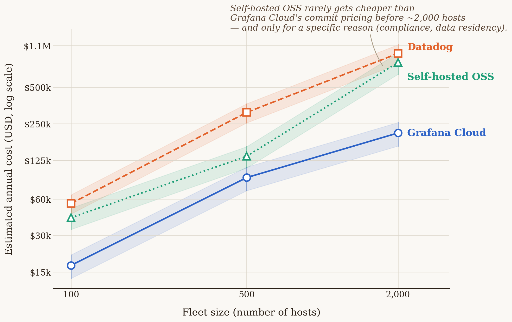

Chapter 3 — Choosing a platform: why Grafana Cloud
Picture a small delivery company just opening for business in a new city. The first decision isn't "which truck should we buy" — the first decision is whether to buy anything at all. Leasing a fleet means: you pay per mile and per day, someone else worries about servicing it, fueling it, sourcing spare parts and a mechanic, and when business slows down in January, you simply hand back half the vans and stop paying for them. Buying a fleet means the opposite: a large upfront cost, your own garage, your own mechanics on payroll twelve months a year regardless of season — but the cost per mile driven, at high volume, eventually drops below the cost of leasing.
Neither of these two decisions is universally "better." It depends entirely on volume: a company with five vans almost never needs its own garage; a company with five hundred trucks driving the same routes every day almost always does. The mistake both types of companies make is basing the decision on company size instead of on volume and predictability of spend.
The exact same decision, in the exact same shape, awaits every team rolling out observability: whether to lease a managed platform (Grafana Cloud, Datadog, and similar — you pay by data volume and by seat, someone else runs the infrastructure), or to build and run your own LGTM stack (Loki, Grafana, Tempo, Mimir — free software, but your own EKS cluster, your own disks, your own engineer getting paged at 3 a.m. when Mimir stops accepting writes). This chapter is that calculation, done honestly, with real prices.
3.1 The question this chapter answers
Before the book gets into the technical details of the LGTM stack — Loki for logs, Tempo for traces, Mimir for metrics, Grafana for visualization, all as one product in the chapters that follow — it's worth answering the question every reader asks first, and one that rarely gets an honest answer in any vendor's documentation: does it even pay to buy this as a service, or is it cheaper to run your own? And, while we're at it, why Grafana Cloud specifically, and not Datadog, ServiceNow, or some third option?
3.2 How it was actually done — a practical walkthrough
In the implementation this book follows, the decision was made in two separate steps, months apart — which is itself an important lesson: this isn't one decision, it's two different decisions that are easy to conflate.
Step one — which platform, if leasing. Before any instrumentation was rolled out, a price comparison was done across several managed observability platforms (Grafana Cloud, Datadog, ServiceNow Cloud Observability, New Relic) based on expected telemetry volume and team size. The result of that comparison — worked out with real, publicly available price lists in this chapter's analytical section — favored Grafana Cloud on total cost at the team's actual scale, with the added advantage that the free tier lets you try the system in production before signing any contract at all.
Step two — lease or build. Separately from the vendor choice, a strategic decision was made not to build a self-hosted LGTM stack on EKS, for one reason that recurs throughout this book: the company this implementation was built for is not an enterprise-scale corporation — it has no tens of thousands of hosts, no existing platform team whose sole job is maintaining internal observability infrastructure. The estimated cost of adding that responsibility to an existing, small infrastructure team came out higher than the cost of a Grafana Cloud subscription. This calculation — with real numbers, not just intuition — is worked out in § 3.3.
What actually happened afterward. The decision wasn't "set it once and forget it." As the number of instrumented services grew, the system at one point blew through the free tier in a single weekend — metric cardinality consumption exceeded the quota faster than anyone had planned for. The response to that moment wasn't "let's switch to self-hosted to avoid the bill" (Chapter 11 shows in detail why that would have been a panicked, not a rational, decision at that point), but two parallel moves: upgrading to the paid Pro tier (so the system would immediately stop dropping data), and kicking off a multi-phase cardinality-reduction project (native histograms, aggregation at the gateway, tuning the Tempo metrics-generator — all covered in Chapter 11) that brought the monthly bill back to a predictable level. This is an important departure from how this decision is often portrayed in vendor marketing: moving from a free to a paid tier wasn't a defeat, it was an expected, planned step — the system was doing exactly what it was supposed to; it just found its limit sooner than anyone expected.
What was actually adopted, technically. The result of both steps is Grafana Cloud as the managed version of four open-source components:
| Component | Role | What the self-hosted equivalent would be |
|---|---|---|
| Mimir | Metrics storage and querying (Prometheus-compatible) | Your own Mimir/Prometheus cluster |
| Loki | Log storage and querying | Your own Loki cluster + object storage |
| Tempo | Trace storage and querying | Your own Tempo cluster + object storage |
| Grafana | Visualization, alerting, dashboards | Your own Grafana OSS deployment |
All four components are, individually, free open-source software. What you pay for with Grafana Cloud isn't the software — it's the operation: scaling, backups, upgrades, multi-tenant isolation, 24/7 on-call over someone else's infrastructure. That's exactly what § 3.3 measures in dollars.
3.3 Analytical section — what the price comparison actually shows
Price lists, as they really are
Observability platform pricing is deliberately hard to compare directly — each one measures a different unit (host, GB, active series, seat, span). The table below reduces four real platforms to what each actually charges for, per published price lists, accurate as of when this chapter was written (2026) — vendors change their pricing without notice, so treat the numbers below as an illustration of the comparison method, not a current offer; check the official price list before making any decision:
| Platform | How it's billed | Concrete numbers (published) |
|---|---|---|
| Grafana Cloud (Pro) | Platform + per seat + per volume | $19/month platform + $8/active user (3 free) + $6.50 per 1,000 active metric series above 10K free + ~$0.45/GB for logs and traces (processing + ingestion) + $0.10/GB/month retention |
| Datadog | Per host + per feature + per volume | $15/host/month (infra, annual) + $31/host/month (APM) + $0.10/GB indexed logs + $1.27 per million ingested log events + $1.70 per million indexed spans |
| New Relic | Per volume + per seat | 100 GB/month free, then $0.40/GB; $49/seat (Core) up to $99–349/seat (Full Platform, depending on tier) |
| ServiceNow Cloud Observability (formerly Lightstep) | Not publicly published | No price list available without talking to sales — which itself says something about the target buyer (a large enterprise procurement, not a self-serve team of a few engineers) |
A first, often overlooked line item: Grafana Cloud also charges per seat, not just by data volume. A team that budgets purely on expected metric/log/trace volume and forgets that every additional engineer with Grafana access beyond the first three carries $8/month will end up with a bill higher than planned — a small amount per head, but linear with team growth, and easy to miss because it isn't a "telemetry" cost in the narrow sense.
At a realistic small-to-midsize company scale (say, around thirty instrumented services, a team of about ten engineers with dashboard access, moderate log volume), this comparison consistently favors Grafana Cloud over Datadog — the biggest reason being Datadog's "per host" model, which doesn't map well onto containerized, ephemeral infrastructure (dozens of short-lived batch jobs starting and stopping on a schedule look like dozens of "hosts" in a model designed for stable, long-running servers). New Relic is more competitive at low volume (100 GB free is generous), but the per-seat price climbs fast once the team outgrows a few people on the Full Platform tier. ServiceNow's unpublished price is, paradoxically, information in itself: platforms that require "contact sales" before showing a single number tend to target budgets a small team doesn't have.
Self-hosted OSS: where leasing stops paying off
This is a question standard vendor comparisons deliberately avoid, since no vendor has any interest in showing you the point where its product stops being the cheapest option. An independent analysis of that question — one that accounts for both your own infrastructure and engineering time, not just server cost — gives a clearer picture than the intuition of "bigger company = self-hosted pays off":

The data in the chart (estimated annual cost at three infrastructure-scale control points, from an independent mid-market cost analysis) shows three things worth calling out:
- At small and mid scale (up to roughly 500 hosts), Grafana Cloud is clearly cheaper than both Datadog and self-hosted OSS — even when self-hosted is counted purely on infrastructure cost, let alone once you add the salary of the engineer maintaining that infrastructure.
- Self-hosted OSS "looks cheap" only as long as you count server cost alone, and always looks more expensive the moment you add the real cost of engineering time. One FTE (a full-time engineer) dedicated solely to maintaining the observability platform easily exceeds $300,000 a year in total cost (salary + benefits + overhead) — a figure that has to enter the calculation, not just the cost of EBS volumes and EC2 instances.
- The crossover point is much farther out than the "we're a big company" intuition suggests. The self-hosted option only starts approaching the price of Grafana Cloud's negotiated (commit) pricing at a scale of several thousand hosts — and even then, the right call for self-hosted rarely comes from savings alone; it comes from a specific reason a cloud option can't satisfy: an air-gapped environment, a regulatory requirement for data residency in your own data center, or a contractual ban on sending telemetry outside your own infrastructure. Without such a reason, "we're big enough to run our own LGTM stack" is, based on these numbers, often the wrong conclusion — not because self-hosted is bad, but because the break-even point sits farther out than it looks at first glance.
Recommendation for a reader running enterprise-scale infrastructure: if your company already has thousands of hosts, an existing platform team, and — crucially — a concrete reason telemetry must never leave your own network, a self-hosted Grafana OSS LGTM stack on EKS stops being the "cheaper alternative" and becomes a rational, documented choice, not a risk taken for the sake of thrift. For everyone below that line — and most companies are below that line — Grafana Cloud (or a comparable managed platform) is the more rational starting point, with the self-hosted option staying open for later, once the numbers genuinely justify it.
Back to the fleet
A leased van follows similar logic to Grafana Cloud's free tier: low entry cost, you pay for exactly what you use, and if your volume estimate turns out wrong, the mistake shows up immediately as a bigger bill — not as a catastrophe, because the van rental company doesn't stop operating when you blow through your monthly mileage limit, exactly the way Grafana Cloud doesn't stop working when you blow through your quota — it just starts charging more. Your own garage only makes sense once volume is predictable enough and large enough that the mechanic's fixed cost stops being a risk and becomes a saving — which is exactly that several-thousand-host threshold from the chart above, not "the company has more than fifty employees."
3.4 Rules collected from this chapter
- These are two separate decisions, not one: (1) which platform to lease, if leasing, and (2) whether to lease at all or build your own. Don't measure them with the same argument.
- When comparing platform prices, convert everything to the same unit before comparing — "per host" and "per GB" and "per active series" aren't comparable without translating them to your actual scale.
- Don't forget to include the per-seat cost alongside the per-volume cost — on some platforms (Grafana Cloud, New Relic) that grows linearly with team size, not with telemetry volume.
- Self-hosted "free software" is never free — factor in the full cost of at least one FTE (~$300k+/year total cost) before comparing it to a managed platform's price.
- "We're a big company" isn't a sufficient reason for self-hosted. A sufficient reason is concrete: a scale of several thousand hosts and a clear operational or regulatory reason telemetry can't leave your own network.
- Blowing through a free tier isn't a defeat — it's a signal the system has reached its next phase, and needs a planned response (upgrade + cardinality control), not a panicked migration.
3.5 Exercise for the reader
Take your system's current (or planned) telemetry volume — number of instrumented services, number of hosts/jobs, estimated log volume in GB/month, and the size of the team that needs dashboard access. Translate that volume into a price at at least two of the platforms in the § 3.3 table, including the per-seat cost. Then, separately, estimate the real annual cost of one FTE on your team who would be partially (say, 20%) dedicated to maintaining a self-hosted alternative. Compare all three numbers. If the difference is under 20%, the decision probably shouldn't be made on price — you should look for a different criterion (operational risk, regulatory requirement, existing team expertise).
Sources used in the analytical section
- Grafana Cloud Pricing In 2026: What It Really Costs — CloudZero
- Grafana Cloud Pricing 2026 — MonitoringCost.com
- Datadog Pricing 2026: Full Cost Breakdown & How to Save — Last9
- New Relic Pricing 2026 — MonitoringCost.com
- ServiceNow Cloud Observability Pricing — TrustRadius
- Datadog vs Grafana Cloud vs self-hosted Grafana: the mid-market observability cost decision — Optivulnix